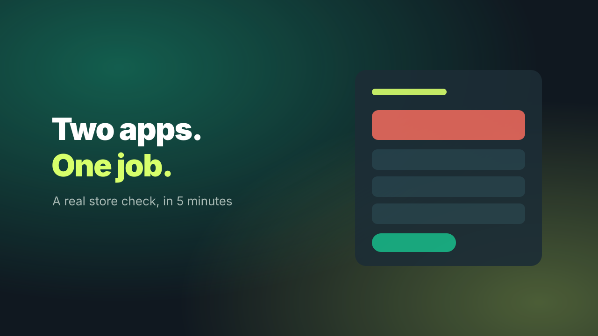

Watch us find two apps doing one job.
A real store, checked from the outside in about a minute. Then run the same free check on yours, right below.

Five minutes, seven chapters.
No webinar, no sign-up wall. Just the problem, a real check, and when it is worth going further.
- Why so many stores pay for the same job twice
- How it happens: launches, sales, and freelancers who add and never remove
- What a store check can see from outside, and what it cannot
- A live check on a real store, start to finish
- The outside view versus your real app list
- When not to buy, and what you get if you do
- Your turn: paste your address
Three things worth five minutes.
Even if you never buy anything from us.
Where doubles hide
The app categories where stores most often end up with two tools for one job.
What an outside check sees
And the part it cannot, so you know what to look for in your own admin.
How to cut safely
Run both for one billing cycle at most, move your data, then cancel the loser.

The free check is the outside view. The audit is the whole story.
The reviewed audit adds your real app list and a person who reads both, then sends you a plain-English plan: what to cut, what to keep, and what to do first.